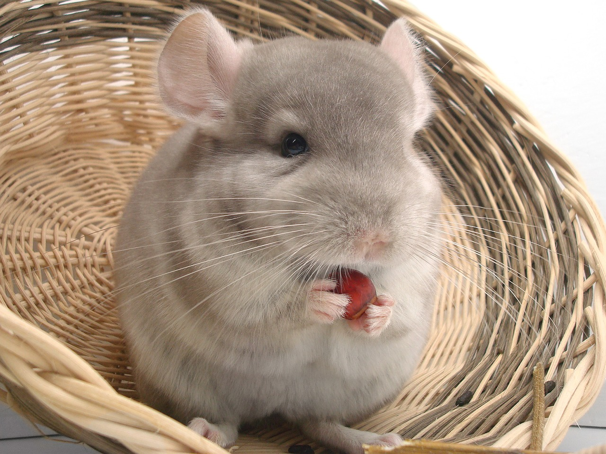

Separamos 11 animais exóticos para se ter em casa.
FURÃO
ferret, ou furão, como é popularmente conhecido, não é um animal natural do Brasil. No entanto, ele está conquistando
o coração de muitos brasileiros e se tornando um pet de estimação cada vez mais popular por aqui.
Ele é conhecido por ser muito agitado, brincalhão, curioso e amoroso.
Apesar de sua natureza exótica, o ferret adora carinho e companhia. Dentre as particularidades do pet, está o custo
mensal da rotina de cuidados, que pode chegar a até R$ 200.
Outro ponto de atenção e essencial para a saúde do furão é que a espécie não se adapta a locais quentes, com temperatura
maior que 30 graus.
TARÂNTULA
Animais de estimação exóticos: conheça a tarântula
Ao contrário do que pensam, a Tarântula não oferece riscos para os seres humanos. Além disso, há muitos apaixonados
por aracnídeos que fazem questão de ter a espécie como animal de estimação.
Contudo, seu veneno pode matar algumas espécies de mamíferos. Deste modo, ao decidir ter uma tarântula, verifique os
riscos ela pode oferecer aos outros animais da casa.
rgb(169, 169, 169);"
ANIMAIS EXÓTICOS
Mas, de modo geral, a aranha consegue viver tranquilamente em um aquário e sendo alimentada por insetos.
MINI PORCO
O mini porco é tão charmoso e carismático que começou a fazer sucesso entre os brasileiros.
Ter um mini porco como um pet de estimação pode ser uma ótima escolha para aqueles que procuram um animal exótico
para cuidar.
Isso porque, além de ser muito fofo, é uma espécie extremamente inteligente, amorosa e companheira.
animal de estimação exótico: mini porco
SAGUI
Inteligente e brincalhão, este macaquinho é um dos animais exóticos mais procurados atualmente.
Com até 25 centímetros de altura, é uma espécie que necessita de domesticação desde cedo para conseguir manter um
bom convívio com os humanos.
Para comprar o animal, procure um criadouro certificado pelo IBAMA.
Além disso, é importante estar atento aos cuidados específicos. Isso porque, diferente do que muitos pensam, a dieta
do sagui não deve ser composta apenas com bananas, e sim, rações nutritivas.
animais-de-estimação-exóticos
IGUANA
A iguana é muito procurada por aqueles que amam répteis, e também é um dos animais de estimação exóticos. E esse é
um tipo de pet super exótico que necessita de cuidados especiais.
Ao ter um animal de estimação como esse, é necessário estar atento aos detalhes.
Isso envolve a alimentação, terrário, e, inclusive a temperatura do ambiente para garantir que o animal esteja
saudável e feliz.
Além disso, a Iguana só pode ser comercializada com a autorização do IBAMA.
CORUJA
O que pouca gente sabe é que as corujas podem ser adotadas como animais de estimação, e são muito companheiras.
No entanto, algumas espécies possuem certa dificuldade para serem domesticadas. Desta forma, antes de adquirir a
sua, consulte se está autorizada a domesticação da espécie.
Algumas das espécies que você pode criar em casa são:
.
-Coruja suindara;
-Coruja orelhuda;
-Coruja buraqueira;
-Corujão-da-Virgínia.
Mas, não é só isso, o possível tutor, por sua vez, precisa ter autorização para possuir a coruja.
As etapas para adquirir uma coruja doméstica, envolvem o cadastrado no SISPASS, ter no mínimo 18 anos de idade e
possuir um Cadastro Federal de Tecnologia (CTF).
Depois disso, a agência vai fazer uma visita e confirmar os documentos pessoais. A partir daí, sua autorização será
concedida ou não.

CACATUA
Animais de estimação exóticos
As aves dessa espécie são capazes de atingir alturas de 40 e 50 cm e pesar até 1 kg.
Além de serem muito simpáticas e brincalhonas, as cacatuas também são uma ótima opção para quem procura um animal de
estimação exótico. Essa linda espécie de psitacídeos australian faz parte da família cacatuidae.
Dentre os cuidados, ela precisa
a de pelo menos 11 horas de atenção por dia para que não ficar muito inquieta –
especialmente à noite.
Além disso, as cacatuas podem viver mais de 70 anos e com certeza serão uma ótima companhia.
CHINCHILA
A chinchila faz parte da lista de animais de estimação exóticos é um pequeno roedor nativo das montanhas frias do
Chile.
Inteligente, fofo, ativo, sociável e carinhoso, o animal também é uma ótima opção para quem procura um pet exótico.
O roedor pode ter um peso variado de 80 a 300 gramas, e assim como a maioria dos animais, essa espécie requer uma
alimentação equilibrada.
E isso envolve rações específicas, frutas e exercícios diários.

TARTARUGA-TIGRE-D’ÁGUA
Este é um animal muito parecido com uma tartaruga, mas não é. A espécie em si vive em ambientes de água doce, como
rios, lagos e pântanos na Argentina, Uruguai e Brasil.N)
Devido à sua coloração, também é conhecida como tartaruga verde e amarela.
Quando adultos, podem atingir 25 centímetros de comprimento. Eles são onívoros, ou seja, comem produtos vegetais e
animais, e vivem até 30 anos.
RATO TWISTER
rato twister branco
O rato de estimação mais comum é o twister, que por sinal é um animal brincalhão e amigável.
Além disso, existem diversas cores diferN)
A jiboia não oferece riscos aos seres humanos. Isso porque, ela é uma serpente não venenosa. E por este motivo,
muita gente a considera quando pensa em animais de estimação diferentes para se ter em casa.
A jiboia é um animal pertencente às cobras, e em sua fase adulta, costuma ter no mínimo 1,80 m de comprimento.
Carnívora por natureza, o tutor deve ter um cuidado especial com a sua alimentação. Uma vez que a refeição dessa
espécie envolve, de preferência, pequenos mamíferos, como roedores e morcegos.
Esse animal tem uma variedade de cores, algumas apresentam coloração predominante desde cinza, marrom ou quase
pretas. Além disso, a jiboia pode ser encontrada em quase todos os biomas brasileiros.